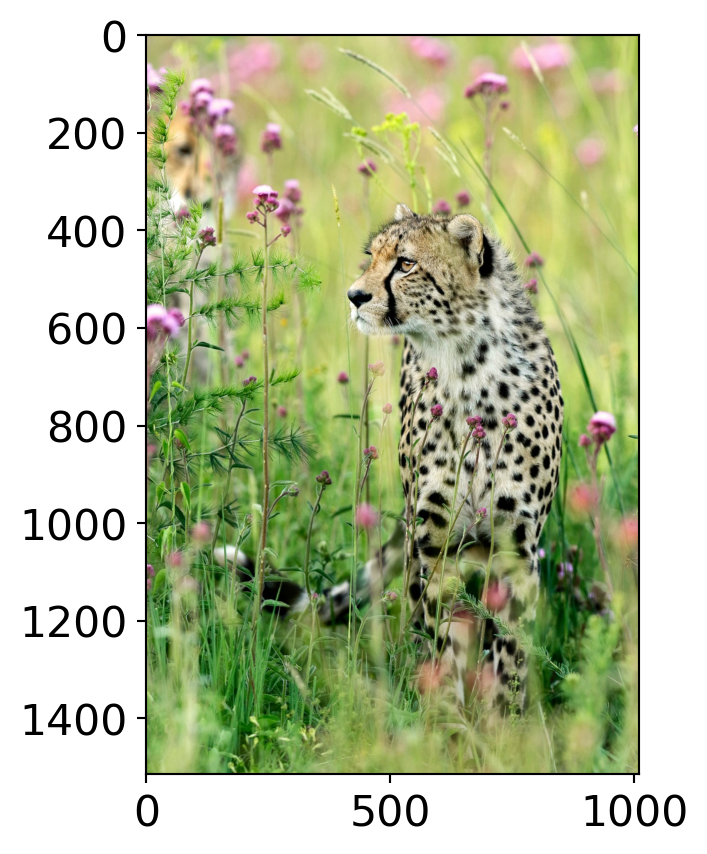
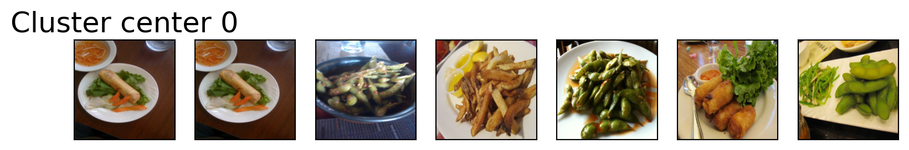
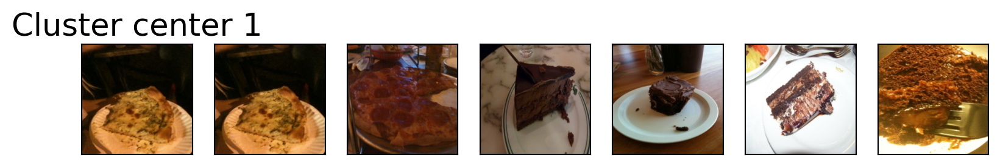
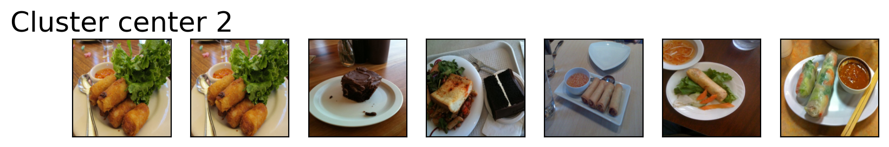
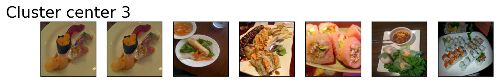
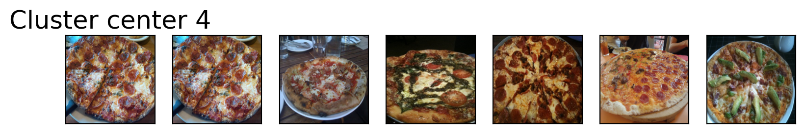

2Lecture 1: Introduction to CPSC 330
Firas Moosvi (Slides adapted from Varada Kolhatkar)
🤝 Introductions ! 🤝
About your instructor

About my research interests

Group work in this class
This term we will try to work in “Pods” of 3-5 …
Research shows that there is tremendous benefits in students working (and struggling) together!
Students ask better and more insightful questions, engage more deeply with the work, and it adds a social element to class.
We will try this in CPSC 330 this term!
Group work in this class
Understandably, not everyone is a fan of group work - I understand that!
So you will never be forced to work in groups If you would like to opt-out, move to the far left and far right sides of the room so we know you prefer to work individually.
If everyone moves to the side of the room, we will re-evaluate this approach 😂
There are no marks or points associated with these groups, and everyone should work on their own laptops as well
Group work: Pods
Form a Pod of 3-5 people sitting close to you.
Each person should answer the following questions:
- Preferred Name,
- Year,
- (intended) Major
- Why are you taking CPSC 330?
Then, as a group, answer the following question:
What is the most interesting (good or bad) example of Machine Learning in society?
Meet Eva (a fictitious persona)!

Eva is among one of you. She has some experience in Python programming. She knows machine learning as a buzz word. During her recent internship, she has developed some interest and curiosity in the field. She wants to learn what is it and how to use it. She is a curious person and usually has a lot of questions!
🎯 Learning Outcomes
By the end of this lesson, you will be able to:
Explain the difference between AI, ML, and DL
Describe what machine learning is and when it is appropriate to use ML-based solutions.
Briefly describe supervised learning.
Differentiate between traditional programming and machine learning.
Evaluate whether a machine learning solution is suitable for your problem or whether a rule-based or human-expert solution is more appropriate.
Navigate the course materials and get familiar with the course syllabus and policies.
About this course
CPSC 330 website
- Course Jupyter book: https://ubc-cs.github.io/cpsc330-2025W2
- Course GitHub repository: https://github.com/UBC-CS/cpsc330-2025W2
Important
Course website: https://ubc-cs.github.io/cpsc330-2025W2 is the most important link. You can access the course website from Canvas.

Please read everything on there!
You can find the source code for everything we do here: https://ubc-cs.github.io/cpsc330-2025W2.
Important
Make sure you go through the syllabus thoroughly and complete the syllabus quiz before next class!
Asking questions during class
You are welcome to ask questions by raising your hand!
If you would prefer to write notes and ask questions later, you are more than welcome to do that also! Use Ed Discussion.
Registration, waitlist and prerequisites
Important
Please go through this document carefully before contacting your instructors about these issues. Even then, we are very unlikely to be able to help with registration, waitlist or prerequisite issues.
- We are expecting that all students registered on the waitlist have already, or will soon get a notification to join the course!
- The waitlist will close on Friday at 3 PM and no more students will be able to register after that!
- It is your responsibility to catch up on any missed work.
Lecture format
- In person lectures Tuesday and Thursday from 3:30 PM - 5 PM
- There will be videos to watch before almost every lecture. You will find the list of pre-watch videos in the schedule on the course webpage.
- We will also try to work on some questions and exercises together during the class.
- All materials will be posted in this GitHub repository.
- You may attend any tutorials or office hours your want, regardless of in which/whether you’re registered.
Home work assignments
- First homework assignment is due soon, it will be released to you today.
- This is a relatively straightforward assignment on Python. If you struggle with this assignment then that could be a sign that you will struggle later on in the course.
- You must do the first two homework assignments on your own.
Exams
- We’ll have two self-scheduled midterms over a few day window and one final exam in Computer-based Testing Facility (CBTF).
Course structure
- Part I: Introduction, ML fundamentals, preprocessing, midterm 1
- Part II: Unsupervised learning, transfer learning, common special cases, midterm 1
- Part III: Communication and ethics
- ML skills are not beneficial if you can’t use them responsibly and communicate your results. In this module we’ll talk about these aspects. ## Code of conduct
- Our main forum for getting help will be Ed Discussion.
Important
Please read this entire document about asking for help. TLDR: Be nice.
Setting up your computer for the course
Tools used in this course
We will use the following tools throughout the course:
- Coding:
Python, with eitherJupyter LaborVS Code - Version Control:
gitandGitHub - Assignment Submission:
Gradescope - Discussion Forum:
Piazza - Exams and Final Grades:
PrairieLearnandCanvas - Recommended Browsers: Google Chrome or Mozilla Firefox
Course conda environment
- Follow the setup instructions here to create a course
condaenvironment on your computer. - If you do not have your computer with you, you can partner up with someone and set up your own computer later.
Python requirements/resources
We will primarily use Python in this course.
Here is the basic Python knowledge you’ll need for the course:
- Basic Python programming
- Numpy
- Pandas
- Basic matplotlib
Homework 1 is all about Python.
Note
We do not have time to teach all the Python we need but you can find some useful Python resources here.
Workload
What does a typical week look like?
Before class: Watch pre-lecture videos or preview notes
In class: Two 80-minute lectures with iClicker questions, activities, and live demos
Support: Weekly tutorials and office hours
Practice: Weekly assignments (except exam weeks)
Tips for success:
Attend lectures regularly and ask questions
Start homework early. Hands-on practice is essential
Use Generative AI tools responsibly. No blind copy-pasting
Always question your data, methods, and results — justify your choices
Homework format: Jupyter lab notebooks
- Our notes are created in a Jupyter notebook, with file extension
.ipynb. - Also, you will complete your homework assignments using Jupyter notebooks.
- Confusingly, “Jupyter notebook” is also the original application that opens
.ipynbfiles - but has since been replaced by Jupyter lab.- I am using Jupyter lab, some things might not work with the Jupyter notebook application.
- You can also open these files in Visual Studio Code.
Jupyter lab notebooks
- Notebooks contain a mix of code, code output, markdown-formatted text (including LaTeX equations), and more.
- When you open a Jupyter notebook in one of these apps, the document is “live”, meaning you can run the code.
For example:
More about Jupyter lab
- By default, Jupyter prints out the result of the last line of code, so you don’t need as many
printstatements. - In addition to the “live” notebooks, Jupyter notebooks can be statically rendered in the web browser, e.g. this.
- This can be convenient for quick read-only access, without needing to launch the Jupyter notebook/lab application.
- But you need to launch the app properly to interact with the notebooks.
Lecture notes
- All the lectures from last year are available here.
- We cannot promise anything will stay the same from last year to this year, so read them in advance at your own risk.
- A “finalized” version will be pushed to GitHub and the Jupyter book right before each class.
- Each instructor will have slightly adapted versions of notes to present slides during lectures.
- You will find the link to these slides in our repository: https://github.com/UBC-CS/cpsc330-2025W2/tree/main/lectures/103-Firas-lectures
Grades
Setting up your computer for the course
Recommended browser and tools
In this course, we will primarily be using Python , git, GitHub, Canvas, Gradescope, Ed DIscussion, and PrairieLearn.
Course conda environment
- Follow the setup instructions here to create a course
condaenvironment on your computer. - If you do not have your computer with you, you can partner up with someone and set up your own computer later.
Python requirements/resources
We will primarily use Python in this course.
Here is the basic Python knowledge you’ll need for the course:
- Basic Python programming
- Numpy
- Pandas
- Basic matplotlib
- Sparse matrices
Homework 1 is all about Python.
Note
We do not have time to teach all the Python we need but you can find some useful Python resources here.
CPSC 330 vs. 340
Read https://ubc-cs.github.io/cpsc330-2025W2/docs/330_vs_340.html which explains the difference between two courses.
TLDR:
- 340: how do ML models work?
- 330: how do I use ML models?
- CPSC 340 has many prerequisites.
- CPSC 340 goes deeper but has a more narrow scope.
- I think CPSC 330 will be more useful if you just plan to apply basic ML.
Break

Activity 1
Discuss with you neighbour
- What do you know about machine learning?
- What would you like to get out this course?
- Are there any particular topics or aspects of this course that you are especially excited or anxious about? Why?
What is machine learning?
Which cat do you think is AI-generated?

- A
- B
- Both
- None
- What clues did you use to decide?
What are AI, ML, DL?
- Artificial Intelligence (AI): Making computers act smart
- Examples: Deep Blue, early spell checkers
- Machine Learning (ML): Learning patterns from data
- Example: Spam filtering in Gmail
- Deep Learning (DL): Using neural networks to learn complex patterns
- Examples: Face recognition in your phone, voice assistants

Let’s walk through an example
- Have you used search in Google Photos? You can search for “cat” and it will retrieve photos from your libraries containing cats.
- This can be done using image classification.
Image classification
- Imagine we want a system that can tell cats and foxes apart.
- How might we do this with traditional programming? With ML?

| Image ID | Whiskers Present | Ear Size | Face Shape | Fur Color | Eye Shape | Label |
|---|---|---|---|---|---|---|
| 1 | Yes | Large | Round | Mixed | Round | Cat |
| 2 | Yes | Medium | Round | Brown | Almond | Cat |
| 3 | Yes | Large | Pointed | Red | Narrow | Fox |
| 4 | Yes | Large | Pointed | Red | Narrow | Fox |
| 5 | Yes | Small | Round | Mixed | Round | Cat |
| 6 | Yes | Large | Pointed | Red | Narrow | Fox |
| 7 | Yes | Small | Round | Grey | Round | Cat |
| 8 | Yes | Small | Round | Black | Round | Cat |
| 9 | Yes | Large | Pointed | Red | Narrow | Fox |
Traditional programming: example
- You hard-code rules. If all of the following satisfy, it’s a fox.
- pointed face ✅
- red fur ✅
- narrow eyes ✅
- This works for normal cases, but what if there are exceptions
ML approach: example
- We don’t tell the model the exact rule. Instead, we give it many labeled images, and it learns probabilistic patterns across multiple features, not rigid rules.
- If fur is red \(\rightarrow\) 90% chance of Fox.
DL approach: example
- A neural network automatically learns which features to look at (edges \(\rightarrow\) textures \(\rightarrow\) objects).
- No need to even specify face shape or fur colour. It learns relevant features on its own.
What is ML?
- ML uses algorithms to learn patterns from data and build models.
- These models can:
- Make predictions on new data
- Support complex decisions
- Generate new content
- Make predictions on new data
- ML systems can improve when trained on more data.
- There is no one-size-fits-all model. The right choice depends on the problem.
When to use ML?
- When the problem can’t be solved with a fixed set of rules
- When you have lots of data and complex relationships
- When human decision-making is too slow or inconsistent
| Approach | Best for |
|---|---|
| Traditional Programming | Rules are known, data is clean/predictable |
| Machine Learning | Rules are complex/unknown, data is noisy |
When to use Machine Learning (ML) solutions?
Example: Supervised classification
- We want to predict liver disease from tabular features:
| Age | Total_Bilirubin | Direct_Bilirubin | Alkaline_Phosphotase | Alamine_Aminotransferase | Aspartate_Aminotransferase | Total_Protiens | Albumin | Albumin_and_Globulin_Ratio | Target |
|---|---|---|---|---|---|---|---|---|---|
| 40 | 14.5 | 6.4 | 358 | 50 | 75 | 5.7 | 2.1 | 0.50 | Disease |
| 33 | 0.7 | 0.2 | 256 | 21 | 30 | 8.5 | 3.9 | 0.80 | Disease |
| 24 | 0.7 | 0.2 | 188 | 11 | 10 | 5.5 | 2.3 | 0.71 | No Disease |
| 60 | 0.7 | 0.2 | 171 | 31 | 26 | 7.0 | 3.5 | 1.00 | No Disease |
| 18 | 0.8 | 0.2 | 199 | 34 | 31 | 6.5 | 3.5 | 1.16 | No Disease |
Model training
LGBMClassifier(random_state=123, verbose=-1)In a Jupyter environment, please rerun this cell to show the HTML representation or trust the notebook.
On GitHub, the HTML representation is unable to render, please try loading this page with nbviewer.org.
Parameters
| boosting_type | 'gbdt' | |
| num_leaves | 31 | |
| max_depth | -1 | |
| learning_rate | 0.1 | |
| n_estimators | 100 | |
| subsample_for_bin | 200000 | |
| objective | None | |
| class_weight | None | |
| min_split_gain | 0.0 | |
| min_child_weight | 0.001 | |
| min_child_samples | 20 | |
| subsample | 1.0 | |
| subsample_freq | 0 | |
| colsample_bytree | 1.0 | |
| reg_alpha | 0.0 | |
| reg_lambda | 0.0 | |
| random_state | 123 | |
| n_jobs | None | |
| importance_type | 'split' | |
| verbose | -1 |
New examples
- Given features of new patients below we’ll use this model to predict whether these patients have the liver disease or not.
| Age | Total_Bilirubin | Direct_Bilirubin | Alkaline_Phosphotase | Alamine_Aminotransferase | Aspartate_Aminotransferase | Total_Protiens | Albumin | Albumin_and_Globulin_Ratio |
|---|---|---|---|---|---|---|---|---|
| 19 | 1.4 | 0.8 | 178 | 13 | 26 | 8.0 | 4.6 | 1.30 |
| 12 | 1.0 | 0.2 | 719 | 157 | 108 | 7.2 | 3.7 | 1.00 |
| 60 | 5.7 | 2.8 | 214 | 412 | 850 | 7.3 | 3.2 | 0.78 |
| 42 | 0.5 | 0.1 | 162 | 155 | 108 | 8.1 | 4.0 | 0.90 |
Model predictions on new examples
- Let’s examine predictions
| Predicted_target | Age | Total_Bilirubin | Direct_Bilirubin | Alkaline_Phosphotase | Alamine_Aminotransferase | Aspartate_Aminotransferase | Total_Protiens | Albumin | Albumin_and_Globulin_Ratio |
|---|---|---|---|---|---|---|---|---|---|
| No Disease | 19 | 1.4 | 0.8 | 178 | 13 | 26 | 8.0 | 4.6 | 1.30 |
| Disease | 12 | 1.0 | 0.2 | 719 | 157 | 108 | 7.2 | 3.7 | 1.00 |
| Disease | 60 | 5.7 | 2.8 | 214 | 412 | 850 | 7.3 | 3.2 | 0.78 |
| Disease | 42 | 0.5 | 0.1 | 162 | 155 | 108 | 8.1 | 4.0 | 0.90 |
Example: Supervised regression
Suppose we want to predict housing prices given a number of attributes associated with houses. The target here is continuous and not discrete.
| target | bedrooms | bathrooms | sqft_living | sqft_lot | floors | waterfront | view | condition | grade | sqft_above | sqft_basement | yr_built | yr_renovated | zipcode | lat | long | sqft_living15 | sqft_lot15 |
|---|---|---|---|---|---|---|---|---|---|---|---|---|---|---|---|---|---|---|
| 509000.0 | 2 | 1.50 | 1930 | 3521 | 2.0 | 0 | 0 | 3 | 8 | 1930 | 0 | 1989 | 0 | 98007 | 47.6092 | -122.146 | 1840 | 3576 |
| 675000.0 | 5 | 2.75 | 2570 | 12906 | 2.0 | 0 | 0 | 3 | 8 | 2570 | 0 | 1987 | 0 | 98075 | 47.5814 | -122.050 | 2580 | 12927 |
| 420000.0 | 3 | 1.00 | 1150 | 5120 | 1.0 | 0 | 0 | 4 | 6 | 800 | 350 | 1946 | 0 | 98116 | 47.5588 | -122.392 | 1220 | 5120 |
| 680000.0 | 8 | 2.75 | 2530 | 4800 | 2.0 | 0 | 0 | 4 | 7 | 1390 | 1140 | 1901 | 0 | 98112 | 47.6241 | -122.305 | 1540 | 4800 |
| 357823.0 | 3 | 1.50 | 1240 | 9196 | 1.0 | 0 | 0 | 3 | 8 | 1240 | 0 | 1968 | 0 | 98072 | 47.7562 | -122.094 | 1690 | 10800 |
Building a regression model
Predicting prices of unseen houses
| Predicted_target | bedrooms | bathrooms | sqft_living | sqft_lot | floors | waterfront | view | condition | grade | sqft_above | sqft_basement | yr_built | yr_renovated | zipcode | lat | long | sqft_living15 | sqft_lot15 |
|---|---|---|---|---|---|---|---|---|---|---|---|---|---|---|---|---|---|---|
| 345831.740542 | 4 | 2.25 | 2130 | 8078 | 1.0 | 0 | 0 | 4 | 7 | 1380 | 750 | 1977 | 0 | 98055 | 47.4482 | -122.209 | 2300 | 8112 |
| 601042.018745 | 3 | 2.50 | 2210 | 7620 | 2.0 | 0 | 0 | 3 | 8 | 2210 | 0 | 1994 | 0 | 98052 | 47.6938 | -122.130 | 1920 | 7440 |
| 311310.186024 | 4 | 1.50 | 1800 | 9576 | 1.0 | 0 | 0 | 4 | 7 | 1800 | 0 | 1977 | 0 | 98045 | 47.4664 | -121.747 | 1370 | 9576 |
| 597555.592401 | 3 | 2.50 | 1580 | 1321 | 2.0 | 0 | 2 | 3 | 8 | 1080 | 500 | 2014 | 0 | 98107 | 47.6688 | -122.402 | 1530 | 1357 |
We are predicting continuous values here as apposed to discrete values in disease vs. no disease example.
Text data
Example: Text classification
- Suppose you are given some data with labeled spam and non-spam messages and you want to predict whether a new message is spam or not spam.
| target | sms |
|---|---|
| spam | LookAtMe!: Thanks for your purchase of a video clip from LookAtMe!, you've been charged 35p. Think you can do better? Why not send a video in a MMSto 32323. |
| ham | Aight, I'll hit you up when I get some cash |
| ham | Don no da:)whats you plan? |
| ham | Going to take your babe out ? |
| ham | No need lar. Jus testing e phone card. Dunno network not gd i thk. Me waiting 4 my sis 2 finish bathing so i can bathe. Dun disturb u liao u cleaning ur room. |
Let’s train a model
Pipeline(steps=[('countvectorizer', CountVectorizer(max_features=5000)),
('logisticregression', LogisticRegression(max_iter=5000))])In a Jupyter environment, please rerun this cell to show the HTML representation or trust the notebook. On GitHub, the HTML representation is unable to render, please try loading this page with nbviewer.org.
Parameters
Parameters
Parameters
Unseen messages
- Now use the trained model to predict targets of unseen messages:
| sms | |
|---|---|
| 3245 | Funny fact Nobody teaches volcanoes 2 erupt, tsunamis 2 arise, hurricanes 2 sway aroundn no 1 teaches hw 2 choose a wife Natural disasters just happens |
| 944 | I sent my scores to sophas and i had to do secondary application for a few schools. I think if you are thinking of applying, do a research on cost also. Contact joke ogunrinde, her school is one m... |
| 1044 | We know someone who you know that fancies you. Call 09058097218 to find out who. POBox 6, LS15HB 150p |
| 2484 | Only if you promise your getting out as SOON as you can. And you'll text me in the morning to let me know you made it in ok. |
Predicting on unseen data
The model is accurately predicting labels for the unseen text messages above!
| sms | spam_predictions | |
|---|---|---|
| 3245 | Funny fact Nobody teaches volcanoes 2 erupt, tsunamis 2 arise, hurricanes 2 sway aroundn no 1 teaches hw 2 choose a wife Natural disasters just happens | ham |
| 944 | I sent my scores to sophas and i had to do secondary application for a few schools. I think if you are thinking of applying, do a research on cost also. Contact joke ogunrinde, her school is one me the less expensive ones | ham |
| 1044 | We know someone who you know that fancies you. Call 09058097218 to find out who. POBox 6, LS15HB 150p | spam |
| 2484 | Only if you promise your getting out as SOON as you can. And you'll text me in the morning to let me know you made it in ok. | ham |
Examplel: Text classification with LLMs
- LLMs = Large Language Models
from transformers import pipeline, AutoModelForTokenClassification, AutoTokenizer
# Sentiment analysis pipeline
analyzer = pipeline("sentiment-analysis", model='distilbert-base-uncased-finetuned-sst-2-english')
analyzer(["I asked my model to predict my future, and it said '404: Life not found.'",
'''Machine learning is just like cooking—sometimes you follow the recipe,
and other times you just hope for the best!.'''])[{'label': 'NEGATIVE', 'score': 0.995707631111145},
{'label': 'POSITIVE', 'score': 0.9994770884513855}]Zero-shot learning
- Now suppose you want to identify the emotion expressed in the text rather than just positive or negative.
['im feeling rather rotten so im not very ambitious right now',
'im updating my blog because i feel shitty',
'i never make her separate from me because i don t ever want her to feel like i m ashamed with her',
'i left with my bouquet of red and yellow tulips under my arm feeling slightly more optimistic than when i arrived',
'i was feeling a little vain when i did this one',
'i cant walk into a shop anywhere where i do not feel uncomfortable',
'i felt anger when at the end of a telephone call',
'i explain why i clung to a relationship with a boy who was in many ways immature and uncommitted despite the excitement i should have been feeling for getting accepted into the masters program at the university of virginia',
'i like to have the same breathless feeling as a reader eager to see what will happen next',
'i jest i feel grumpy tired and pre menstrual which i probably am but then again its only been a week and im about as fit as a walrus on vacation for the summer']Zero-shot learning for emotion detection
from transformers import AutoTokenizer
from transformers import pipeline
import torch
#Load the pretrained model
model_name = "facebook/bart-large-mnli"
classifier = pipeline('zero-shot-classification', model=model_name)
exs = dataset["test"]["text"][10:20]
candidate_labels = ["sadness", "joy", "love","anger", "fear", "surprise"]
outputs = classifier(exs, candidate_labels)Zero-shot learning for emotion detection
| sequence | labels | scores | |
|---|---|---|---|
| 0 | i don t feel particularly agitated | [surprise, anger, joy, sadness, fear, love] | [0.36008915305137634, 0.30189961194992065, 0.11901352554559708, 0.11381501704454422, 0.060392118990421295, 0.044790640473365784] |
| 1 | i feel beautifully emotional knowing that these women of whom i knew just a handful were holding me and my baba on our journey | [joy, love, surprise, fear, sadness, anger] | [0.36994215846061707, 0.28871527314186096, 0.25608012080192566, 0.04292355105280876, 0.03344926983118057, 0.008889692835509777] |
| 2 | i pay attention it deepens into a feeling of being invaded and helpless | [fear, surprise, sadness, anger, joy, love] | [0.34146833419799805, 0.3088075518608093, 0.25616905093193054, 0.07989861816167831, 0.007844805717468262, 0.005811695009469986] |
| 3 | i just feel extremely comfortable with the group of people that i dont even need to hide myself | [joy, surprise, love, sadness, anger, fear] | [0.3305216431617737, 0.2947240471839905, 0.15343153476715088, 0.07691401243209839, 0.07596734166145325, 0.06844133883714676] |
| 4 | i find myself in the odd position of feeling supportive of | [surprise, joy, fear, love, sadness, anger] | [0.828798234462738, 0.04317942261695862, 0.03977382555603981, 0.031413380056619644, 0.031412508338689804, 0.025422628968954086] |
| 5 | i was feeling as heartbroken as im sure katniss was | [sadness, surprise, fear, love, anger, joy] | [0.7667965292930603, 0.1818476766347885, 0.02587120793759823, 0.011756740510463715, 0.008171585388481617, 0.005556150339543819] |
| 6 | i feel a little mellow today | [surprise, joy, love, fear, sadness, anger] | [0.4937353730201721, 0.2632198631763458, 0.11367963254451752, 0.06402160227298737, 0.050954706966876984, 0.014388859272003174] |
| 7 | i feel like my only role now would be to tear your sails with my pessimism and discontent | [sadness, anger, surprise, fear, joy, love] | [0.6992782950401306, 0.2004878669977188, 0.06185944378376007, 0.032874513417482376, 0.0036469092592597008, 0.001852882793173194] |
| 8 | i feel just bcoz a fight we get mad to each other n u wanna make a publicity n let the world knows about our fight | [anger, surprise, sadness, fear, joy, love] | [0.602990448474884, 0.19827117025852203, 0.10198809951543808, 0.08116985112428665, 0.010117067955434322, 0.005463298875838518] |
| 9 | i feel like reds and purples are just so rich and kind of perfect | [joy, surprise, love, anger, fear, sadness] | [0.3644145131111145, 0.3051210939884186, 0.19462531805038452, 0.055565837770700455, 0.05413540080189705, 0.026137880980968475] |
Image data
Example: Predicting labels of a given image
- Suppose you have a bunch of animal images. You do not have any labels associated with them and you want to predict labels of these images.
- We can use machine learning to predict labels of these images using a technique called transfer learning.
Downloading: "https://download.pytorch.org/models/vgg16-397923af.pth" to /home/runner/.cache/torch/hub/checkpoints/vgg16-397923af.pth
Class Probability score
cheetah, chetah, Acinonyx jubatus 0.994
leopard, Panthera pardus 0.005
jaguar, panther, Panthera onca, Felis onca 0.001
snow leopard, ounce, Panthera uncia 0.000
--------------------------------------------------------------
Class Probability score
tiger cat 0.636
tabby, tabby cat 0.174
Pembroke, Pembroke Welsh corgi 0.081
lynx, catamount 0.011
--------------------------------------------------------------
Class Probability score
macaque 0.885
patas, hussar monkey, Erythrocebus patas 0.062
proboscis monkey, Nasalis larvatus 0.015
titi, titi monkey 0.010
--------------------------------------------------------------
Class Probability score
Walker hound, Walker foxhound 0.582
English foxhound 0.144
beagle 0.068
EntleBucher 0.059
--------------------------------------------------------------:::
Clustering images
Finding groups in food images

K-Means on food dataset
Downloading: "https://download.pytorch.org/models/densenet121-a639ec97.pth" to /home/runner/.cache/torch/hub/checkpoints/densenet121-a639ec97.pthKMeans(n_clusters=5, random_state=123)In a Jupyter environment, please rerun this cell to show the HTML representation or trust the notebook.
On GitHub, the HTML representation is unable to render, please try loading this page with nbviewer.org.
Parameters
Examining food clusters
39
Image indices: [ 39 197 12 14 138 181]
228
Image indices: [228 65 128 54 175 260]
138
Image indices: [138 54 185 278 39 89]
193
Image indices: [193 39 145 212 169 108]
120
Image indices: [120 268 244 94 72 87]
Interactive: Is ML appropriate?
❓❓ Questions for you
Select all that apply: Which problems are suitable for ML?
- Checking if a UBC email address ends with @student.ubc.ca before allowing login
- Deciding which students should be awarded a scholarship based on their personal essays
- Predicting which songs you’ll like based on your Spotify listening history
- Detecting plagiarism by checking if two essays are exactly identical
- Automatically tagging photos of your friends on Instagram
Summary: When is ML suitable?
| Approach | Best Used When… |
|---|---|
| Machine Learning | The dataset is large and complex, and the decision rules are unknown, fuzzy, or too complex to define explicitly |
| Rule-based System | The logic is clear and deterministic, and the rules or thresholds are known and stable |
| Human Expert | The problem involves ethics, creativity, emotion, or ambiguity that can’t be formalized easily |
Activity 2
Think of a problem you have come across in the past which could be solved using machine learning.
- What would be the input and output?
- How do humans solve this now? Are there heuristics or rules?
- What kind of data do you have or could you collect?
Types of machine learning
Here are some typical learning problems.
- Supervised learning (Gmail spam filtering)
- Unsupervised learning (Google News)
- Reinforcement learning (AlphaGo)
- Generative AI (ChatGPT)
- Recommendation systems (Amazon item recommendation system)
What is supervised learning?
- Training data comprises a set of observations (\(X\)) and their corresponding targets (\(y\)).
- We wish to find a model function \(f\) that relates \(X\) to \(y\).
- We use the model function to predict targets of new examples.

🤔 Eva’s questions
At this point, Eva is wondering about many questions.
- How are we exactly “learning” whether a message is spam and ham?
- Are we expected to get correct predictions for all possible messages? How does it predict the label for a message it has not seen before?
- What if the model mis-labels an unseen example? For instance, what if the model incorrectly predicts a non-spam as a spam? What would be the consequences?
- How do we measure the success or failure of spam identification?
- If you want to use this model in the wild, how do you know how reliable it is?
- Would it be useful to know how confident the model is about the predictions rather than just a yes or a no?
It’s great to think about these questions right now. But Eva has to be patient. By the end of this course you’ll know answers to many of these questions!
What is Machine Learning (ML)?
Spam prediction
- Suppose you are given some data with labelled spam and non-spam messages
| target | sms |
|---|---|
| spam | LookAtMe!: Thanks for your purchase of a video clip from LookAtMe!, you've been charged 35p. Think you can do better? Why not send a video in a MMSto 32323. |
| ham | Aight, I'll hit you up when I get some cash |
| ham | Don no da:)whats you plan? |
| ham | Going to take your babe out ? |
| ham | No need lar. Jus testing e phone card. Dunno network not gd i thk. Me waiting 4 my sis 2 finish bathing so i can bathe. Dun disturb u liao u cleaning ur room. |
Traditional programming vs. ML
- Imagine writing a Python program for spam identification, i.e., whether a text message or an email is spam or non-spam.
- Traditional programming
- Come up with rules using human understanding of spam messages.
- Time consuming and hard to come up with robust set of rules.
- Machine learning
- Collect large amount of data of spam and non-spam emails and let the machine learning algorithm figure out rules.
Let’s train a model
- There are several packages that help us perform machine learning.
Unseen messages
- Now use the trained model to predict targets of unseen messages:
| sms | |
|---|---|
| 3245 | Funny fact Nobody teaches volcanoes 2 erupt, tsunamis 2 arise, hurricanes 2 sway aroundn no 1 teaches hw 2 choose a wife Natural disasters just happens |
| 944 | I sent my scores to sophas and i had to do secondary application for a few schools. I think if you are thinking of applying, do a research on cost also. Contact joke ogunrinde, her school is one m... |
| 1044 | We know someone who you know that fancies you. Call 09058097218 to find out who. POBox 6, LS15HB 150p |
| 2484 | Only if you promise your getting out as SOON as you can. And you'll text me in the morning to let me know you made it in ok. |
Predicting on unseen data
The model is accurately predicting labels for the unseen text messages above!
| sms | spam_predictions | |
|---|---|---|
| 3245 | Funny fact Nobody teaches volcanoes 2 erupt, tsunamis 2 arise, hurricanes 2 sway aroundn no 1 teaches hw 2 choose a wife Natural disasters just happens | ham |
| 944 | I sent my scores to sophas and i had to do secondary application for a few schools. I think if you are thinking of applying, do a research on cost also. Contact joke ogunrinde, her school is one me the less expensive ones | ham |
| 1044 | We know someone who you know that fancies you. Call 09058097218 to find out who. POBox 6, LS15HB 150p | spam |
| 2484 | Only if you promise your getting out as SOON as you can. And you'll text me in the morning to let me know you made it in ok. | ham |
A different way to solve problems
Machine learning uses computer programs to model data. It can be used to extract hidden patterns, make predictions in new situation, or generate novel content.
A field of study that gives computers the ability to learn without being explicitly programmed.
– Arthur Samuel (1959)
ML vs. traditional programming
- With machine learning, you’re likely to
- Save time
- Customize and scale products

Prevalence of ML
Let’s look at some examples.

Activity: For what type of problems ML is appropriate? (~5 mins)
Discuss with your neighbour for which of the following problems you would use machine learning
- Finding a list of prime numbers up to a limit
- Given an image, automatically identifying and labeling objects in the image
- Finding the distance between two nodes in a graph
Types of machine learning
Here are some typical learning problems.
- Supervised learning (Gmail spam filtering)
- Training a model from input data and its corresponding targets to predict targets for new examples.
- Training a model from input data and its corresponding targets to predict targets for new examples.
- Unsupervised learning (Google News)
- Training a model to find patterns in a dataset, typically an unlabeled dataset.
- Reinforcement learning (AlphaGo)
- A family of algorithms for finding suitable actions to take in a given situation in order to maximize a reward.
- Recommendation systems (Amazon item recommendation system)
- Predict the “rating” or “preference” a user would give to an item.
What is supervised learning?
- Training data comprises a set of observations (\(X\)) and their corresponding targets (\(y\)).
- We wish to find a model function \(f\) that relates \(X\) to \(y\).
- We use the model function to predict targets of new examples.
🤔 Eva’s questions
At this point, Eva is wondering about many questions.
- How are we exactly “learning” whether a message is spam and ham?
- Are we expected to get correct predictions for all possible messages? How does it predict the label for a message it has not seen before?
- What if the model mis-labels an unseen example? For instance, what if the model incorrectly predicts a non-spam as a spam? What would be the consequences?
- How do we measure the success or failure of spam identification?
- If you want to use this model in the wild, how do you know how reliable it is?
- Would it be useful to know how confident the model is about the predictions rather than just a yes or a no?
It’s great to think about these questions right now. But Eva has to be patient. By the end of this course you’ll know answers to many of these questions!
Looking ahead to next class
It is very important that you watch the assigned pre-lecture videos before class!